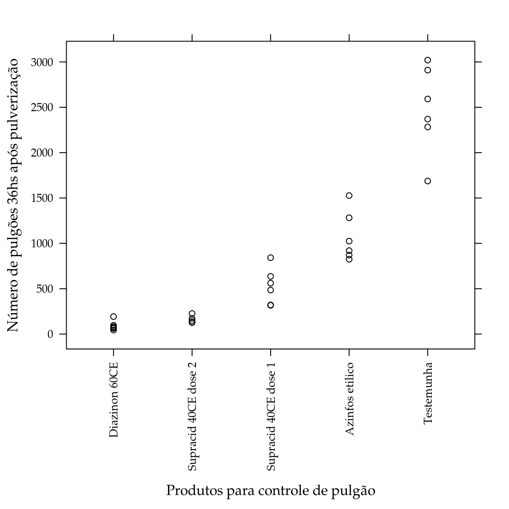
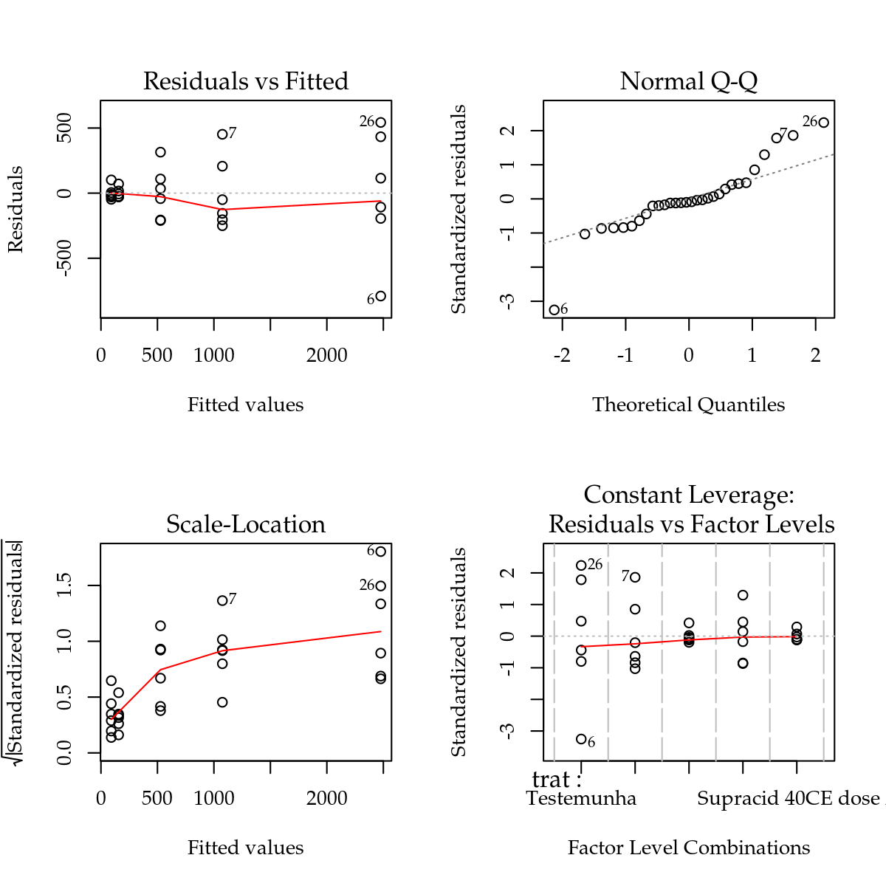
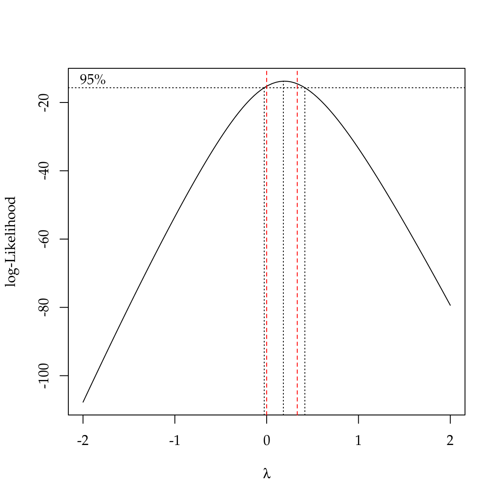
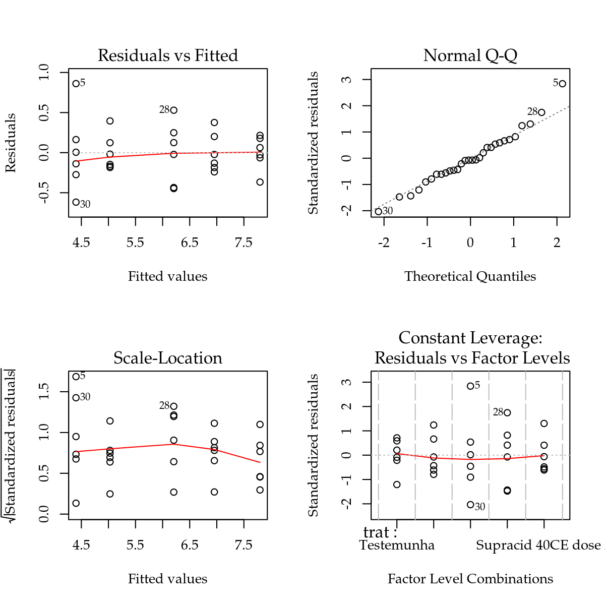
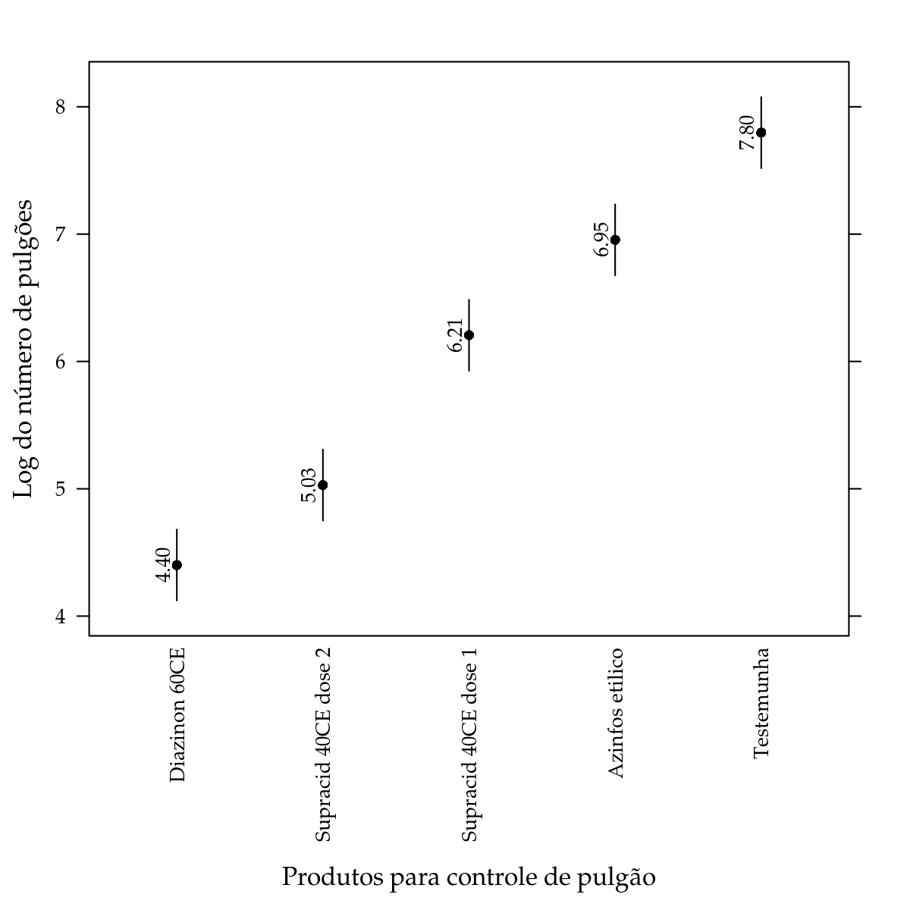

Nessa vignette vamos considerar BanzattoQd3.2.1, já disponível no pacote labestData.
library(labestData)
ls("package:labestData")## [1] "AndradeEg2.1" "AndradeEg2.17" "AndradeEg4.11"
## [4] "AndradeEx2.13" "AndradeEx4.8" "AndradePg90"
## [7] "AndradePg92" "AndradeTb1.1" "AndradeTb1.2"
## [10] "AndradeTb2.1" "AndradeTb2.11" "AndradeTb2.12"
## [13] "AndradeTb2.15" "AndradeTb2.16" "AndradeTb2.17"
## [16] "AndradeTb2.18" "AndradeTb2.20" "AndradeTb2.22"
## [19] "AndradeTb2.23" "AndradeTb2.24" "AndradeTb2.25"
## [22] "AndradeTb2.26" "AndradeTb2.27" "AndradeTb2.28"
## [25] "AndradeTb2.29" "AndradeTb2.31" "AndradeTb2.32"
## [28] "AndradeTb2.34" "AndradeTb2.36" "AndradeTb2.37"
## [31] "AndradeTb2.38" "AndradeTb2.42" "AndradeTb2.44"
## [34] "AndradeTb2.45" "AndradeTb2.46" "AndradeTb2.47"
## [37] "AndradeTb2.6" "AndradeTb3.1" "AndradeTb3.2"
## [40] "AndradeTb4.1" "BanzattoQd1.2.3" "BanzattoQd3.2.1"
## [43] "BanzattoQd3.4.1" "BanzattoQd3.6.1" "BanzattoQd3.7.1"
## [46] "BanzattoQd4.5.2" "BanzattoQd4.7.1" "BanzattoQd5.2.1"
## [49] "BanzattoQd5.2.4" "BanzattoQd5.3.1" "BanzattoQd5.3.7"
## [52] "BanzattoQd5.5.1" "BanzattoQd6.2.2" "BanzattoQd6.2.5"
## [55] "BanzattoQd6.3.4" "BanzattoQd6.4.2" "BanzattoQd7.2.1"
## [58] "BanzattoQd7.3.1" "BanzattoQd7.3.3" "BanzattoQd8.2.1"
## [61] "BanzattoQd8.3.1" "BanzattoQd8.4.1" "BanzattoQd8.4.3"
## [64] "BanzattoQd9.2.1" "BarbinEx1" "BarbinEx13"
## [67] "BarbinEx14" "BarbinEx16" "BarbinEx17"
## [70] "BarbinEx18" "BarbinEx3" "BarbinEx8"
## [73] "BarbinEx9" "BarbinPg104" "BarbinPg114"
## [76] "BarbinPg125" "BarbinPg137" "BarbinPg156"
## [79] "BarbinPg167" "BarbinPg177" "BarbinPg25"
## [82] "BarbinPg72" "CharnetApD.1" "CharnetEg12.2"
## [85] "CharnetEg4.2" "CharnetEg5.2" "CharnetEg6.4"
## [88] "CharnetEg7.3" "CharnetEg8.2" "CharnetEg9.2"
## [91] "CharnetEg9.4" "CharnetEx1.17" "CharnetEx1.18"
## [94] "CharnetEx1.20" "CharnetEx1.5" "CharnetEx1.6"
## [97] "CharnetEx10.7" "CharnetEx11.2" "CharnetEx11.3"
## [100] "CharnetEx2.10" "CharnetEx2.11" "CharnetEx2.12"
## [103] "CharnetEx2.13" "CharnetEx2.14" "CharnetEx2.15"
## [106] "CharnetEx2.8" "CharnetEx2.9" "CharnetEx3.1"
## [109] "CharnetEx3.3" "CharnetEx3.4" "CharnetEx3.9"
## [112] "CharnetEx4.1" "CharnetEx4.10" "CharnetEx4.2"
## [115] "CharnetEx4.8" "CharnetEx5.1" "CharnetEx5.10"
## [118] "CharnetEx5.11" "CharnetEx5.13" "CharnetEx5.3"
## [121] "CharnetEx5.5" "CharnetEx5.6" "CharnetEx6.3"
## [124] "CharnetEx6.6" "CharnetEx6.7" "CharnetEx7.1"
## [127] "CharnetEx7.2" "CharnetEx7.7" "CharnetEx8.1"
## [130] "CharnetEx8.2" "CharnetEx8.3" "CharnetEx8.4"
## [133] "CharnetEx8.5" "CostaEx5.7.2" "CostaEx5.7.3"
## [136] "CostaTb4" "CostaTb6" "CostaTb7"
## [139] "CostaTb8" "DemetrioEg7.7" "DemetrioEx1.4.1.1"
## [142] "DemetrioEx1.4.1.2" "DemetrioEx1.4.1.3" "DemetrioEx1.4.1.4"
## [145] "DemetrioEx1.4.1.5" "DemetrioEx1.4.2" "DemetrioEx2.12.15"
## [148] "DemetrioEx2.12.16" "DemetrioEx2.12.5" "DemetrioEx5.4.2"
## [151] "DemetrioEx5.4.5" "DemetrioEx6.5.2" "DemetrioEx7.8.3"
## [154] "DemetrioTb1.1" "DemetrioTb1.2" "DemetrioTb1.3"
## [157] "DemetrioTb1.4" "DemetrioTb1.5" "DemetrioTb1.6"
## [160] "DemetrioTb10.2" "DemetrioTb2.10" "DemetrioTb2.11"
## [163] "DemetrioTb2.12" "DemetrioTb2.9" "DemetrioTb3.5"
## [166] "DemetrioTb3.6" "DemetrioTb4.2" "DemetrioTb4.5"
## [169] "DemetrioTb5.1" "DemetrioTb7.1" "DiasEg10.1"
## [172] "DiasEg10.2" "DiasEg11.1" "DiasEg3.2"
## [175] "DiasEg3.6" "DiasEg5.1" "DiasEg5.3"
## [178] "DiasEg6.1" "DiasEg6.2" "DiasEg6.3"
## [181] "DiasEg7.1" "DiasEg9.1" "DiasEg9.2"
## [184] "DiasEg9.4" "DiasEx10.4.10" "DiasEx10.4.6"
## [187] "DiasEx10.4.7" "DiasEx10.4.8" "DiasEx11.7.8"
## [190] "DiasEx11.7.9" "DiasEx3.6.7" "DiasEx6.5.1"
## [193] "DiasEx6.5.10" "DiasEx6.5.9" "DiasEx9.6.10"
## [196] "DiasEx9.6.4" "DiasEx9.6.6" "DiasEx9.6.7"
## [199] "Dinorah" "EpprechtTb2.1" "EpprechtTb2.2"
## [202] "EpprechtTb2.3" "EpprechtTb5.2" "EpprechtTb5.4"
## [205] "EpprechtTb5.5" "EpprechtTb5.6" "EpprechtTb5.9"
## [208] "EpprechtTb6.10" "EpprechtTb6.12" "EpprechtTb6.4"
## [211] "EpprechtTb6.9" "EpprechtTb7.5" "EpprechtTb8.12"
## [214] "EpprechtTb8.13" "EpprechtTb8.14" "EpprechtTb8.15"
## [217] "EpprechtTb8.16" "EpprechtTb8.2" "EpprechtTb8.8"
## [220] "FariaEg2.9.5" "FariaEg3.2.4" "FariaQd11.4"
## [223] "FariaQd11.9" "FariaQd12.5" "FariaQd14.2"
## [226] "FariaQd14.3" "FariaQd6.1" "FerreiraEg13.2"
## [229] "FerreiraEg13.3" "FerreiraEg3.4" "FerreiraEg5.1"
## [232] "FerreiraEg6.3" "FerreiraEg7.1" "FerreiraEg7.4"
## [235] "FerreiraEg8.1" "FerreiraEg9.1" "FerreiraEx10.11.9"
## [238] "FerreiraEx3.8.5" "FerreiraEx7.4.1" "FerreiraEx8.5.1"
## [241] "FerreiraEx9.7.2" "keywords" "labestDataView"
## [244] "ManlyTb1.1" "ManlyTb1.2" "ManlyTb1.3"
## [247] "ManlyTb1.4" "ManlyTb1.5" "ManlyTb10.2"
## [250] "ManlyTb10.4" "ManlyTb11.3" "ManlyTb11.5"
## [253] "ManlyTb4.5" "ManlyTb6.6" "ManlyTb6.7"
## [256] "ManlyTb9.7" "ManlyTb9.8" "MingotiAnA1"
## [259] "MingotiAnA2" "MingotiAnA3" "MingotiAnA4"
## [262] "MingotiAnA5" "MingotiAnA6" "MingotiTb2.1"
## [265] "MingotiTb2.2" "MingotiTb3.1" "MingotiTb3.10"
## [268] "MingotiTb3.5" "MingotiTb3.7" "MingotiTb6.1"
## [271] "MingotiTb6.8" "MingotiTb8.1" "MorettinTb11.4"
## [274] "MorettinTb3.1" "MorettinTb3.10" "MorettinTb3.12"
## [277] "MorettinTb3.14" "MorettinTb3.6" "PaulaEg1.12.2"
## [280] "PaulaEg1.12.4" "PaulaEg1.12.5" "PaulaEg1.12.6"
## [283] "PaulaEg2.4.2" "PaulaEg2.4.3" "PaulaEg2.5.2"
## [286] "PaulaEg2.8.1" "PaulaEg3.5.1" "PaulaEg3.5.2"
## [289] "PaulaEg3.6.11a" "PaulaEg3.6.11b" "PaulaEg3.6.9c"
## [292] "PaulaEg4.2.6" "PaulaEg4.3.6" "PaulaEg5.2.8a"
## [295] "PaulaEg5.2.8c" "PaulaEg5.5.1" "PaulaEg5.5.2"
## [298] "PaulaEg5.5.3" "PaulaEx1.13.19" "PaulaEx1.13.20"
## [301] "PaulaEx1.13.21" "PaulaEx1.13.22" "PaulaEx1.13.23"
## [304] "PaulaEx1.13.24" "PaulaEx1.13.25" "PaulaEx2.10.15"
## [307] "PaulaEx2.10.16" "PaulaEx2.10.17" "PaulaEx2.10.19"
## [310] "PaulaEx2.10.20" "PaulaEx2.10.7" "PaulaEx3.7.14"
## [313] "PaulaEx3.7.15" "PaulaEx3.7.16" "PaulaEx3.7.19"
## [316] "PaulaEx3.7.20" "PaulaEx3.7.21" "PaulaEx3.7.22"
## [319] "PaulaEx3.7.23" "PaulaEx3.7.24" "PaulaEx3.7.25"
## [322] "PaulaEx3.7.7a" "PaulaEx3.7.7b" "PaulaEx3.7.7c"
## [325] "PaulaEx3.7.8" "PaulaEx4.6.15" "PaulaEx4.6.17"
## [328] "PaulaEx4.6.20" "PaulaEx4.6.5" "PaulaEx4.6.6"
## [331] "PaulaEx4.6.7" "PaulaEx5.6.13" "PaulaEx5.6.14"
## [334] "PaulaEx5.6.15" "PaulaTb1.6" "PaulaTb1.9"
## [337] "PaulaTb2.1" "PaulaTb2.6" "PaulaTb3.12"
## [340] "PaulaTb3.20" "PaulaTb3.21" "PaulaTb4.12"
## [343] "PaulaTb4.14" "PaulaTb4.2" "PaulaTb4.7"
## [346] "PaulaTb4.9" "PaulinoEx9.29" "PaulinoEx9.30"
## [349] "PaulinoEx9.31" "PaulinoTb11.10" "PimentelEg4.2"
## [352] "PimentelEg5.2" "PimentelEg6.2" "PimentelEg7.3"
## [355] "PimentelEg7.4" "PimentelEx5.8.4" "PimentelEx5.8.5"
## [358] "PimentelEx6.6.3" "PimentelPg142" "PimentelPg185"
## [361] "PimentelPg267" "PimentelPg269" "PimentelPg382"
## [364] "PimentelPg72" "PimentelPg91" "PimentelTb10.3.1"
## [367] "PimentelTb10.4.1" "PimentelTb10.6.1" "PimentelTb11.3.1"
## [370] "PimentelTb12.2.1" "PimentelTb12.3.1" "PimentelTb12.4.1"
## [373] "PimentelTb13.5.1" "PimentelTb14.4.1" "PimentelTb14.5.1"
## [376] "PimentelTb14.7.1" "PimentelTb16.2.1" "PimentelTb16.3.1"
## [379] "PimentelTb17.3.1" "PimentelTb17.4.1" "PimentelTb18.2.1"
## [382] "PimentelTb20.2.1" "PimentelTb21.5.1" "PimentelTb5.3.1"
## [385] "PimentelTb6.3.1" "PimentelTb7.2.1" "PimentelTb7.6.1"
## [388] "PimentelTb7.8.1" "PimentelTb7.9.1" "PimentelTb8.3.1"
## [391] "PimentelTb9.2.1" "PimentelTb9.3.1" "PimentelTb9.4.1"
## [394] "RamalhoEg11.10" "RamalhoEg11.13" "RamalhoEg11.4"
## [397] "RamalhoEg12.10" "RamalhoEg13.2" "RamalhoEg4.3"
## [400] "RamalhoEg4.7" "RamalhoEg7.8" "RamalhoEg8.1"
## [403] "RamalhoEg8.8" "RamalhoEx1.7" "RamalhoEx12.2"
## [406] "RamalhoEx13.1" "RamalhoEx13.2" "RamalhoEx13.3"
## [409] "RamalhoEx3.1" "RamalhoEx4.1" "RamalhoEx4.2"
## [412] "RamalhoEx7.10" "RamalhoEx8.1" "RamalhoEx8.2"
## [415] "RamalhoTb1.2" "RamalhoTb11.1" "RamalhoTb11.17"
## [418] "RamalhoTb12.8" "RamalhoTb13.1" "RamalhoTb13.11"
## [421] "RamalhoTb13.13" "RamalhoTb13.15" "RamalhoTb13.6"
## [424] "RamalhoTb3.1" "RamalhoTb3.4" "RamalhoTb3.6"
## [427] "RamalhoTb7.1" "RamalhoTb8.12" "RamosAnC1"
## [430] "RamosAnC2" "RamosAnC4" "RamosAnC6"
## [433] "RamosAnC7" "RamosAnC8" "RamosTb2.5"
## [436] "RamosTb2.6" "RamosTb2.7" "RamosTb3.1"
## [439] "RamosTb4.1" "RamosTb5.2" "RamosTb5.8"
## [442] "RamosTb6.1" "StorckEg2.3.5" "StorckTb101"
## [445] "StorckTb2" "StorckTb56" "StorckTb60"
## [448] "StorckTb67" "StorckTb74" "StorckTb8"
## [451] "VieiraEx7.3" "VieiraEx7.5" "VieiraEx8.3"
## [454] "VieiraPg50.1" "VieiraPg50.2" "VieiraPg57.1"
## [457] "VieiraPg57.2" "VieiraTb4.1" "VieiraTb5.3"
## [460] "VieiraTb7.2" "VieiraTb7.7" "VieiraTb8.5"
## [463] "ZimmermannTb10.15" "ZimmermannTb10.20" "ZimmermannTb10.6"
## [466] "ZimmermannTb10.9" "ZimmermannTb11.1" "ZimmermannTb11.10"
## [469] "ZimmermannTb11.13" "ZimmermannTb11.19" "ZimmermannTb11.7"
## [472] "ZimmermannTb12.1" "ZimmermannTb12.13" "ZimmermannTb12.14"
## [475] "ZimmermannTb12.19" "ZimmermannTb12.2" "ZimmermannTb12.20"
## [478] "ZimmermannTb12.26" "ZimmermannTb12.27" "ZimmermannTb12.32"
## [481] "ZimmermannTb12.33" "ZimmermannTb12.7" "ZimmermannTb12.8"
## [484] "ZimmermannTb13.1" "ZimmermannTb14.3" "ZimmermannTb14.9"
## [487] "ZimmermannTb15.1" "ZimmermannTb15.10" "ZimmermannTb15.4"
## [490] "ZimmermannTb16.1" "ZimmermannTb16.10" "ZimmermannTb16.3"
## [493] "ZimmermannTb16.4" "ZimmermannTb16.5" "ZimmermannTb16.8"
## [496] "ZimmermannTb3.12" "ZimmermannTb3.2.1" "ZimmermannTb3.5"
## [499] "ZimmermannTb4.11" "ZimmermannTb4.4" "ZimmermannTb5.11"
## [502] "ZimmermannTb5.15" "ZimmermannTb5.2" "ZimmermannTb7.1"
## [505] "ZimmermannTb7.4" "ZimmermannTb8.5" "ZimmermannTb9.13"
## [508] "ZimmermannTb9.17" "ZimmermannTb9.22" "ZimmermannTb9.26"help(BanzattoQd3.2.1, help_type = "html")Este conjunto de dados é de um experimento instalado em delineamento inteiramente casualizado (DIC) para estudar diferentes produtos para controle de pulgão na cultura do pepino. Foram avaliados 4 produtos (trat), e mais uma testemunha, para controle do pulgão (Aphis gossypii Glover). A variável resposta desse experimento foi o número de pulgões encontrados, uma variável resposta do tipo contagem.
Em caso de não ter o pacote labestData, você pode ler a tabela de dados diretamente do repositório. No entanto, recomendamos que instale o pacote para ter acesso a todos os datasets e às documentações
Antes de iniciar a análise dos dados do experimento, é muito recomendável fazer uma análise exploratória que serve basicamente para
#-----------------------------------------------------------------------
# Ler a partir do repositório do labestData.
# url <- paste0("https://gitlab.c3sl.ufpr.br/pet-estatistica",
# "/labestData/raw/devel/data-raw/BanzattoQd3.2.1.txt")
#
# BanzattoQd3.2.1 <-
# read.table(file = url, sep = "\t", header = TRUE,
# colClasses = c("factor", "integer", "integer"))
#-----------------------------------------------------------------------
# Análise exploratória.
# Estrutura do objeto.
str(BanzattoQd3.2.1)## 'data.frame': 30 obs. of 3 variables:
## $ trat : Factor w/ 5 levels "Azinfos etilico",..: 5 1 3 4 2 5 1 3 4 2 ...
## $ rept : int 1 1 1 1 1 2 2 2 2 2 ...
## $ pulgoes: int 2370 1282 562 173 193 1687 1527 321 127 71 ...# Tabela de frequência para os tratamentos.
xtabs(~trat, data = BanzattoQd3.2.1)## trat
## Azinfos etilico Diazinon 60CE Supracid 40CE dose 1
## 6 6 6
## Supracid 40CE dose 2 Testemunha
## 6 6# Dados desemplilhados.
t(unstack(x = BanzattoQd3.2.1, form = pulgoes ~ trat))## [,1] [,2] [,3] [,4] [,5] [,6]
## Azinfos.etilico 1282 1527 871 1025 825 920
## Diazinon.60CE 193 71 82 62 96 44
## Supracid.40CE.dose.1 562 321 636 317 485 842
## Supracid.40CE.dose.2 173 127 132 150 129 227
## Testemunha 2370 1687 2592 2283 2910 3020# Média e desvio-padrão das observações em cada nível.
aggregate(pulgoes ~ trat, data = BanzattoQd3.2.1,
FUN = function(y) {
c(mean = mean(y), dp = sd(y))
})## trat pulgoes.mean pulgoes.dp
## 1 Azinfos etilico 1075.00000 274.87961
## 2 Diazinon 60CE 91.33333 52.83812
## 3 Supracid 40CE dose 1 527.16667 200.31517
## 4 Supracid 40CE dose 2 156.33333 38.75908
## 5 Testemunha 2477.00000 483.47658library(lattice)
packageVersion("lattice")## [1] '0.20.34'# Diagrama de dispersão.
xyplot(pulgoes ~ reorder(trat, pulgoes), data = BanzattoQd3.2.1,
xlab = "Produtos para controle de pulgão",
ylab = "Número de pulgões 36hs após pulverização",
scales = list(x = list(rot = 90)))
Pela análise exploratória temos que esse experimento é balanceado pois tem número igual de repetições de cada produto. O diagrama de dispersão mostra os valores observados do número de pulgões em função dos produtos. Os níveis foram ordenados de acordo com os números médios de pulgões. É imediato perceber a partir do gráfico que a variabilidade do número de pulgões aumenta com a média. Isso é importante porque adianta um possível problema com o pressuposto de homogeneidade de variâncias do modelo.
O modelo estatístico correspondente ao delineamento é
\[ \begin{aligned} Y|\text{produtos} &\,\sim \text{Normal}(\mu_i, \sigma^2) \newline \mu_i &= \mu+\tau_i \end{aligned} \]
em que \(\tau_i\) é o efeito do produto \(i\) sobre a variável resposta \(Y\), \(\mu\) é a média de \(Y\) na ausência do efeito dos produtos, \(\mu_i\) é a média para cada nível de produto e \(\sigma^2\) é a variância das observações ao redor desse valor médio (ou variância residual).
Para fazer a estimação desses parâmetros é necessário que seja considerada alguma restrição paramétrica. Para isso, no R por default considera-se o efeito do primeiro nível como zero (\(\tau_1 = 0\)). É possível mudar isso nas opções de contrastes do R. Outra parametrização, bem conhecida e usada, é a retrição do tipo soma zero dos efeitos (\(\sum \tau_i = 0\)) e, para essa situação, \(\mu\) representa a média geral do experimento.
Existem duas funções no R para ajustar esse modelo: lm() e aov(). Embora muitos acreditem que aov() deva ser preferida, por causa do nome AOV (Analysis Of Variance), a função lm() é tão apropriada quanto. Inclusive, objetos vindos da lm() dispõem de mais métodos que a da aov() em pacotes para fazer comparações múltiplas, por exemplo. Sendo assim, vamos usar a lm().
#-----------------------------------------------------------------------
# Ajuste do modelo.
m0 <- lm(pulgoes ~ trat, data = BanzattoQd3.2.1)
# Estimativas dos efeitos. Restrição de zerar primeiro nível.
cbind(coef(m0))## [,1]
## (Intercept) 1075.0000
## tratDiazinon 60CE -983.6667
## tratSupracid 40CE dose 1 -547.8333
## tratSupracid 40CE dose 2 -918.6667
## tratTestemunha 1402.0000# Matriz de contrastes sob a retrição zerar primeiro nível.
K <- cbind(1, contrasts(BanzattoQd3.2.1$trat))
K## Diazinon 60CE Supracid 40CE dose 1
## Azinfos etilico 1 0 0
## Diazinon 60CE 1 1 0
## Supracid 40CE dose 1 1 0 1
## Supracid 40CE dose 2 1 0 0
## Testemunha 1 0 0
## Supracid 40CE dose 2 Testemunha
## Azinfos etilico 0 0
## Diazinon 60CE 0 0
## Supracid 40CE dose 1 0 0
## Supracid 40CE dose 2 1 0
## Testemunha 0 1# Médias estimadas pelo modelo.
K %*% coef(m0)## [,1]
## Azinfos etilico 1075.00000
## Diazinon 60CE 91.33333
## Supracid 40CE dose 1 527.16667
## Supracid 40CE dose 2 156.33333
## Testemunha 2477.00000# Médias amostrais.
aggregate(pulgoes ~ trat, data = BanzattoQd3.2.1, FUN = mean)## trat pulgoes
## 1 Azinfos etilico 1075.00000
## 2 Diazinon 60CE 91.33333
## 3 Supracid 40CE dose 1 527.16667
## 4 Supracid 40CE dose 2 156.33333
## 5 Testemunha 2477.00000Conforme comentado, devido à restrição usada, os coeficientes estimados não são as médias em cada nível. Para a restrição do primeiro nível ter efeito nulo, o coeficiente (Intercept) é a média do primeiro nível, no caso Azinfos etilico. Os demais coeficientes são estimativas dos constrastes entre médias de cada um dos níveis restantes com relação ao primeiro nível.
Como nesse exemplo existe uma testemunha, seria conveniente que a testemunha fosse o primeiro nível para então termos os contrastes como resultado do ajuste do modelo. No entanto, como a testemunha é o último nível, pode-se mudar o tipo de contraste para contr.SAS, cuja restrição é zerar o efeito do último nível. Na sequência temos os resultados das duas opções.
m1 <- update(m0, contrasts = list(trat = "contr.SAS"))
coef(m1)## (Intercept) tratAzinfos etilico
## 2477.000 -1402.000
## tratDiazinon 60CE tratSupracid 40CE dose 1
## -2385.667 -1949.833
## tratSupracid 40CE dose 2
## -2320.667BanzattoQd3.2.1 <- transform(BanzattoQd3.2.1,
trat = relevel(trat, ref = "Testemunha"))
levels(BanzattoQd3.2.1$trat)## [1] "Testemunha" "Azinfos etilico"
## [3] "Diazinon 60CE" "Supracid 40CE dose 1"
## [5] "Supracid 40CE dose 2"m0 <- update(m0, data = BanzattoQd3.2.1)
coef(m0)## (Intercept) tratAzinfos etilico
## 2477.000 -1402.000
## tratDiazinon 60CE tratSupracid 40CE dose 1
## -2385.667 -1949.833
## tratSupracid 40CE dose 2
## -2320.667Para fazer inferência a partir do modelo ajustado aos dados, é necessário verificar se os pressupostos do modelo foram atendidos. Caso não sejam, as inferências produzidas não são fiéis, pois a distribuição amostral das estatísticas de teste não são as mesmas sob violação dos pressupostos.
#-----------------------------------------------------------------------
# Exibe o quarteto fantástico da avaliação dos pressupostos.
par(mfrow = c(2, 2))
plot(m0); layout(1)
O conjunto de gráficos acima exibe fuga dos pressupostos. A suposição de homogeneidade de variâncias é claramente violada. Vemos o padrão cone no gráfico 1-1 dessa matriz (Residuals vs Fitted). No gráfico 2-1 (Scale-Location), temos ênfase desse padrão porque a linha média mostra uma relação positiva com a dispersão, representada pela raíz dos valores absolutos dos resíduos padronizados, versus os valores ajustados (média). Ou seja, a relação média-variância não é nula, pois se fosse, a linha de tendência seria horizontal. Por fim, o gráfico 1-2 (Normal Q-Q), exibe fuga do pressuposto de normalidade dos erros, influenciada pela relação média-variância.
Da forma como está, o modelo não tem os pressupostos atendidos. Logo não é recomendado fazer inferências. Precisamos remediar a fuga dos pressupostos antes e a opção mais comum é procurar uma tranformação que estabilize a variância. Em casos como esse, as transformações do tipo potência são capazes de estabilizar a variância. Vamos considerar a transformação Box-Cox para isso.
A tranformação Box-Cox baseia-se na escolha do valor \(\lambda\) de tal maneira que se aumente a compatibilidade dos dados com a suposição de normalidade. A transformação aplicada aos dados é
\[ \begin{aligned} y_{\text{transformado}} &= \frac{y^{\lambda}-1}{\lambda}, \quad \text{ se } \lambda\neq 0 \newline y_{\text{transformado}} &= \log(y), \quad \text{ se } \lambda=0. \end{aligned} \]
A transformação só pode ser aplicada para respostas positivas, \(y>0\) . Caso tenha-se zeros ou valores negativos podemos somar uma constante aos dados. Como o que interessa da transformação é parte não linear (a potenciação), na prática apenas se aplica a função potência sem subtrair 1 e dividir por \(\lambda\). No entanto, essa é a transformação de fato aplicada para calcular o valor da log-verossimilhança. Se houver a curiosidade de fazer o cálculo da log-verrossimilhança passo a passo, lembre-se de considerar o jacobiano da transformação.
MASS::boxcox(m0)
abline(v = c(0, 1/3), lty = 2, col = 2)
A função perfil de log-verossilhança em \(\lambda\) tem intervalo de confiança (95%) que inclui os valores 0 e 1/3, correspondentes às transformações log e raíz cúbica, respectivamente. Não há necessidade de usar o valor exato correspondente ao máximo da função porque isso não vai mudar a normalidade da variável transformada e, como o valor exato é um valor quebrado, valores de \(\lambda\) que correspondem a transformações conhecidas são convenientes, como log, raíz quadrada e raíz cúbica.
Encontrada a transformação a ser aplicada, devemos ajustar o modelo com a variável transformada e avaliar novamente os pressupostos. Não existe garantia de qua a transformação irá corrigir a fuga. O que ela faz é remediar o problema, mas o resultado pode ainda não ser satisfatório.
# Atualiza o modelo anterior passando o log na resposta.
m0 <- update(m0, log(.) ~ .)
par(mfrow = c(2, 2))
plot(m0); layout(1)
Note agora que os gráficos não exibem padrões de fuga de pressupostos. Pelo gráfico 2-1, a relação média variância agora está estável (ou nula). Não há fugas de normalidade de acordo com o gráfico 1-2. Portanto, foi bem sucedida a aplicação da transformação log ao número de pulgões para que o modelo tivesse os pressupostos atendidos. Agora é possível proceder com as inferências.
O objetivo de ter feito o experimento é saber se existe efeito dos produtos para o controle do pulgão na cultura do pepino. Ou seja, se o número médio de pulgões muda conforme o produto aplicado.
O efeito dos produtos é representado pelos coeficientes \(\tau_i\) no modelo estatístico do experimento. Se não existir efeito dos produtos, os valores estimados para \(\tau_{i}\) serão próximos a zero. A hipóteses nula de não haver efeito dos produtos é representada por
\[ \text{H}_{0}: \tau_i = 0, \text{para todo}\,i. \]
Essa hipótese é avaliada pelo estatística F do quadro de análise de variância.
anova(m0)## Analysis of Variance Table
##
## Response: log(pulgoes)
## Df Sum Sq Mean Sq F value Pr(>F)
## trat 4 45.914 11.4786 103.93 3.381e-15 ***
## Residuals 25 2.761 0.1104
## ---
## Signif. codes: 0 '***' 0.001 '**' 0.01 '*' 0.05 '.' 0.1 ' ' 1Pelo quadro de anova (analysis of variance), temos que o valor da estatística F produziu um \(p\)-valor bem pequeno, menor que qualquer nível de significancia adotado na prática. Dessa maneira, rejeitamos a hipótese nula de não haver efeito dos produtos no log do número de pulgões ou, por consequência, no número de pulgões.
Uma vez que existe efeito dos produtos, faz-se necessário aprofundar o conhecimento sobre eles. As hipóteses a serem testadas devem ser estabalecidas antes da coleta dos dados e ajuste do modelo. Como foram estudados 4 níveis de produto e uma testemunha, as hipóteses vão agora considerar diferenças entre cada produto e a testemunha. Como a testemunha é o primeiro nível, temos que testar as hipóteses individuais:
\[ \text{H}_{0}: \mu_i - \mu_1 = 0, \text{para cada}\,i \neq 1. \]
Da forma como ajustamos o modelo, temos as estimativas dos contrastes disponíveis no vetor de coeficientes. O teste individual para cada parâmetro é exibido com o summary() do modelo.
summary(m0)##
## Call:
## lm(formula = log(pulgoes) ~ trat, data = BanzattoQd3.2.1)
##
## Residuals:
## Min 1Q Median 3Q Max
## -0.61710 -0.18119 -0.02221 0.17473 0.86140
##
## Coefficients:
## Estimate Std. Error t value Pr(>|t|)
## (Intercept) 7.7973 0.1357 57.471 < 2e-16 ***
## tratAzinfos etilico -0.8424 0.1919 -4.391 0.000181 ***
## tratDiazinon 60CE -3.3960 0.1919 -17.699 1.18e-15 ***
## tratSupracid 40CE dose 1 -1.5911 0.1919 -8.293 1.21e-08 ***
## tratSupracid 40CE dose 2 -2.7680 0.1919 -14.426 1.26e-13 ***
## ---
## Signif. codes: 0 '***' 0.001 '**' 0.01 '*' 0.05 '.' 0.1 ' ' 1
##
## Residual standard error: 0.3323 on 25 degrees of freedom
## Multiple R-squared: 0.9433, Adjusted R-squared: 0.9342
## F-statistic: 103.9 on 4 and 25 DF, p-value: 3.381e-15Na tabela dos coeficientes tem-se o valor t correspondente a cada contraste. O (Intercept) é a média do log do número de pulgões para a testemunha. Os demais representam contrastes dos produtos com relação à testemunha. Baseado nos \(p\)-valores, todas as hipóteses de contraste nulo com a testemunha são rejeitadas. Ou seja, todos os produtos apresentam número médio diferente da testemunha, no caso um menor valor para média se comparado à testemunha.
Deve-se mencionar que se o nível de significância adotado é de 5% para cada teste. Assim, a probabilidade de rejeitar pelo menos uma hipótese é \(1 - (1 - 0,05)^{4} = 0.1854938\), ou seja, superior a 5%. Com o aumento do número de hipóteses testadas, é consequência aumentar o nível de significância global (probabilidade de rejeitar pelo menos uma hipótese). Existem diferentes formas de corrigir a elevação do nível global de significancia, mas esse não é um objetivo desta vignette.
Uma adequada representação dos resultados é um gráfico com os valores médios e intervalo de confiança para os níveis dos produtos.
pred <- data.frame(trat = levels(BanzattoQd3.2.1$trat))
pred <- cbind(pred,
as.data.frame(predict(m0,
newdata = pred,
interval = "confidence")))
pred$trat <- reorder(pred$trat, pred$fit)
head(pred)## trat fit lwr upr
## 1 Testemunha 7.797284 7.517859 8.076709
## 2 Azinfos etilico 6.954847 6.675423 7.234272
## 3 Diazinon 60CE 4.401294 4.121869 4.680718
## 4 Supracid 40CE dose 1 6.206162 5.926737 6.485587
## 5 Supracid 40CE dose 2 5.029280 4.749855 5.308704library(latticeExtra)
segplot(trat ~ lwr + upr, centers = fit, data = pred,
draw = FALSE, horizontal = FALSE,
xlab = "Produtos para controle de pulgão",
ylab = "Log do número de pulgões",
scales = list(x = list(rot = 90)),
panel = function(x, y, z, centers, ...) {
panel.segplot(x = x, y = y, z = z, centers = centers, ...)
panel.text(x = as.numeric(z), y = centers,
label = sprintf("%0.2f", centers),
srt = 90, cex = 0.8, adj = c(0.5, -0.5))
})
É simples produzir o plano de um delineamento inteiramente casualizado. Vamos gerar o plano para executar um experimento semelhante ao apresentado, mas com 8 repetições e mais um produto, o Novo produto.
trat <- rep(x = c(levels(BanzattoQd3.2.1$trat), "Novo"),
times = 8)
# Opção 1: sorteie os níveis para as unidades experimentais ordenadas.
data.frame(trat = sample(trat), ue = 1:length(trat))
# Opção 2: sorteie as unidades experimentais ordenadas para os níveis.
data.frame(trat = trat, ue = sample(1:length(trat)))sessionInfo()## R version 3.3.2 (2016-10-31)
## Platform: x86_64-pc-linux-gnu (64-bit)
## Running under: Ubuntu precise (12.04.5 LTS)
##
## locale:
## [1] LC_CTYPE=en_US.UTF-8 LC_NUMERIC=C
## [3] LC_TIME=en_US.UTF-8 LC_COLLATE=en_US.UTF-8
## [5] LC_MONETARY=en_US.UTF-8 LC_MESSAGES=en_US.UTF-8
## [7] LC_PAPER=en_US.UTF-8 LC_NAME=C
## [9] LC_ADDRESS=C LC_TELEPHONE=C
## [11] LC_MEASUREMENT=en_US.UTF-8 LC_IDENTIFICATION=C
##
## attached base packages:
## [1] grid stats graphics grDevices utils datasets
## [7] base
##
## other attached packages:
## [1] multcomp_1.4-6 TH.data_1.0-8 MASS_7.3-45
## [4] survival_2.39-5 mvtnorm_1.0-6 knitr_1.15.1
## [7] vcd_1.4-3 reshape_0.8.6 car_2.1-4
## [10] qcc_2.6 reshape2_1.4.2 ggplot2_2.2.1
## [13] latticeExtra_0.6-28 RColorBrewer_1.1-2 lattice_0.20-34
## [16] labestData_0.1-1.462
##
## loaded via a namespace (and not attached):
## [1] zoo_1.7-14 purrr_0.2.2 splines_3.3.2
## [4] colorspace_1.3-2 htmltools_0.3.5 yaml_2.1.14
## [7] mgcv_1.8-15 pkgbuild_0.0.0.9000 pkgdown_0.1.0.9000
## [10] nloptr_1.0.4 withr_1.0.2 plyr_1.8.4
## [13] stringr_1.2.0 MatrixModels_0.4-1 munsell_0.4.3
## [16] commonmark_1.2 gtable_0.2.0 devtools_1.12.0.9000
## [19] codetools_0.2-15 memoise_1.0.0 evaluate_0.10
## [22] labeling_0.3 SparseM_1.76 highlight_0.4.7
## [25] lmtest_0.9-35 quantreg_5.29 pbkrtest_0.4-6
## [28] parallel_3.3.2 methods_3.3.2 Rcpp_0.12.9
## [31] scales_0.4.1 backports_1.0.5 desc_1.1.0
## [34] pkgload_0.0.0.9000 lme4_1.1-12 digest_0.6.12
## [37] stringi_1.1.2 rprojroot_1.2 tools_3.3.2
## [40] sandwich_2.3-4 magrittr_1.5 lazyeval_0.2.0
## [43] tibble_1.2 crayon_1.3.2 whisker_0.3-2
## [46] Matrix_1.2-7.1 xml2_1.1.1 assertthat_0.1
## [49] minqa_1.2.4 rmarkdown_1.3.9004 roxygen2_6.0.1
## [52] R6_2.2.0 nnet_7.3-12 nlme_3.1-128